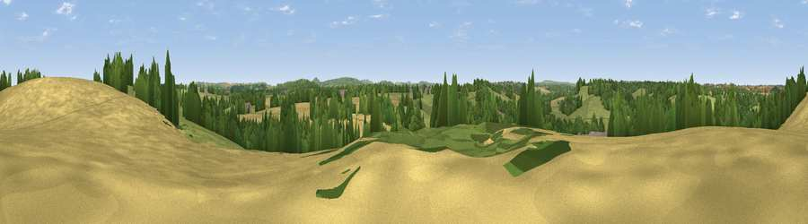

Viewpoint near Beckington
#37692 in England · top 76% of its area beats it · near Beckington · path 276 mWhere it is
The exact computed spot (ST 79125 50675). Click the marker for map links.
Public access: the nearest public right of way is about 276 m away — the final stretch may cross private land. Computed from Natural England's CRoW access layer and OpenStreetMap rights of way — not the legal definitive map. Always verify locally.
The view, rendered

A 360° render of this exact spot computed from the terrain model, tree cover and land cover — summer colours, afternoon light, calibrated against photographs of famous viewpoints. Real trees, hedges and buildings will differ in detail.
The panorama
Grey silhouette: terrain skyline in each direction (720 bearings, Earth curvature and refraction included). Dashed green: skyline with trees (+15 m) and buildings (+8 m) as obstacles. Blue strip: how far the ground is visible on each bearing.
Where the view opens
Wedge length = distance to the farthest visible ground on that bearing (vegetation-aware). Rings at 10, 25 and 50 km.
What fills the view
41% grassland · 38% cropland · 19% woodland · 2% built-up
Angular shares of the visible panorama (visual magnitude), not map area. Landscape diversity 0.50 (0–1 Shannon).
Key numbers
More beautiful places nearby
The staircase of upgrades: each row has a higher view potential than everything closer. Driving times are estimates from straight-line distance, calibrated against real road routing — check an actual route before setting out.
| Place | Direction | Drive | Score |
|---|---|---|---|
| Viewpoint near Beckington | NNE · 0 km | ~1 min | 41.8 |
| Viewpoint near Spring Gardens | W · 2 km | ~5 min | 46.7 |
| Viewpoint near Dilton Marsh | ESE · 5 km | ~11 min | 50.9 |
| Little Cley Hill | SE · 7 km | ~15 min | 61.6 |
| Cley Hill | SE · 7 km | ~15 min | 76.8 |
| Viewpoint near Lamyatt | SW · 19 km | ~33 min | 77.8 |
| Beacon Batch | WNW · 31 km | ~49 min | 79.4 |
| Bleadon Hill [Loxton Hill] | W · 43 km | ~63 min | 79.6 |
51.25485, -2.30051 · source: screening · position refined by local search. Computed location — check access rights before visiting.